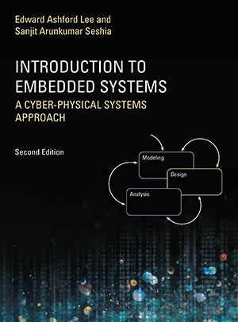

|

|
Lee and Seshia
Introduction to Embedded Systems
— A Cyber-Physical Systems Approach
— Second Edition — MIT Press — 2017
The most visible use of computers and software is processing information for human consumption. The vast majority of computers in use, however, are much less visible. They run the engine, brakes, seatbelts, airbag, and audio system in your car. They digitally encode your voice and construct a radio signal to send it from your cell phone to a base station. They command robots on a factory floor, power generation in a power plant, processes in a chemical plant, and traffic lights in a city. These less visible computers are called embedded systems, and the software they run is called embedded software. The principal challenges in designing and analyzing embedded systems stem from their interaction with physical processes. This book takes a cyber-physical approach to embedded systems, introducing the engineering concepts underlying embedded systems as a technology and as a subject of study. The focus is on modeling, design, and analysis of cyber-physical systems, which integrate computation, networking, and physical processes.
The second edition offers two new chapters, several new exercises, and other improvements. The book can be used as a textbook at the advanced undergraduate or introductory graduate level and as a professional reference for practicing engineers and computer scientists. Readers should have some familiarity with machine structures, computer programming, basic discrete mathematics and algorithms, and signals and systems.
|
Other resources:
Please cite this book as:
Edward A. Lee and Sanjit A. Seshia, Introduction to Embedded Systems, A Cyber-Physical Systems Approach, Second Edition, MIT Press, ISBN 978-0-262-53381-2, 2017.
Please send any and all corrections, comments, and suggestions to
either or both of the authors below:
Edward Ashford Lee
Sanjit A. Seshia
See also the First Edition
Back to main page